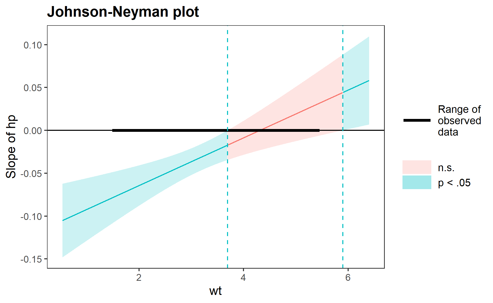

This package consists of a number of tools for the analysis and interpretation of statistical interactions in regression models. Some of these features, especially those that pertain to visualization, are not highly labor-intensive to do oneself but are tedious and error-prone when done “by hand.”
Quick rundown of features:
- simple slopes analysis
- calculation of Johnson-Neyman intervals
- visualization of predicted and observed values using
ggplot2
All of these are implemented in a consistent interface designed to be as simple as possible with tweaks and guts available to advanced users. GLMs, models from the survey package, and multilevel models from lme4 are fully supported as is visualization for Bayesian models from rstanaram and brms. Several other model types work “out of the box” even though they are not officially supported.
Usage
Unless you have a keen eye and good familiarity with both the underlying mathematics and the scale of your variables, it can be very difficult to look at the output of regression model that includes an interaction and completely understand what the model is telling you.
This package contains several means of aiding the understanding of and doing statistical inference with interactions.
Johnson-Neyman intervals and simple slopes analysis
The “classic” way of probing an interaction effect is to calculate the slope of the focal predictor at different values of the moderator. When the moderator is categorical, this is especially informative—e.g., what is the slope for cats vs. dogs? But you can also arbitrarily choose points for continuous moderators.
With that said, the more statistically rigorous way to explore these effects is to find the Johnson-Neyman interval, which tells you the range of values of the moderator in which the slope of the predictor is significant vs. nonsignificant at a specified alpha level.
The sim_slopes function will by default find the Johnson-Neyman interval and tell you the predictor’s slope at specified values of the moderator; by default either both values of binary predictors or the mean and the mean +/- one standard deviation for continuous moderators.
library(interactions)
fiti <- lm(mpg ~ hp * wt, data = mtcars)
sim_slopes(fiti, pred = hp, modx = wt, jnplot = TRUE)#> JOHNSON-NEYMAN INTERVAL
#>
#> When wt is OUTSIDE the interval [3.69, 5.90], the slope of hp is p < .05.
#>
#> Note: The range of observed values of wt is [1.51, 5.42]
#> SIMPLE SLOPES ANALYSIS
#>
#> Slope of hp when wt = 2.238793 (- 1 SD):
#>
#> Est. S.E. t val. p
#> ------- ------ -------- ------
#> -0.06 0.01 -5.66 0.00
#>
#> Slope of hp when wt = 3.217250 (Mean):
#>
#> Est. S.E. t val. p
#> ------- ------ -------- ------
#> -0.03 0.01 -4.07 0.00
#>
#> Slope of hp when wt = 4.195707 (+ 1 SD):
#>
#> Est. S.E. t val. p
#> ------- ------ -------- ------
#> -0.00 0.01 -0.31 0.76The Johnson-Neyman plot can help you get a handle on what the interval is telling you, too. Note that you can look at the Johnson-Neyman interval directly with the johnson_neyman() function.
The above all generalize to three-way interactions, too, although Johnson-Neyman intervals do not handle the second moderator in the way that they do the first.
Visualizing interaction effects
This function plots two- and three-way interactions using ggplot2 with a similar interface to the aforementioned sim_slopes function. Users can customize the appearance with familiar ggplot2 commands. It supports several customizations, like confidence intervals.
interact_plot(fiti, pred = hp, modx = wt, interval = TRUE)
You can also plot the observed data for comparison:
interact_plot(fiti, pred = hp, modx = wt, plot.points = TRUE)
The function also supports categorical moderators—plotting observed data in these cases can reveal striking patterns.
fitiris <- lm(Petal.Length ~ Petal.Width * Species, data = iris)
interact_plot(fitiris, pred = Petal.Width, modx = Species, plot.points = TRUE)
You may also combine the plotting and simple slopes functions by using probe_interaction, which calls both functions simultaneously. Categorical by categorical interactions can be investigated using the cat_plot() function.
Contributing
I’m happy to receive bug reports, suggestions, questions, and (most of all) contributions to fix problems and add features. I prefer you use the Github issues system over trying to reach out to me in other ways. Pull requests for contributions are encouraged.
Please note that this project is released with a Contributor Code of Conduct. By participating in this project you agree to abide by its terms.
License
The source code of this package is licensed under the MIT License.